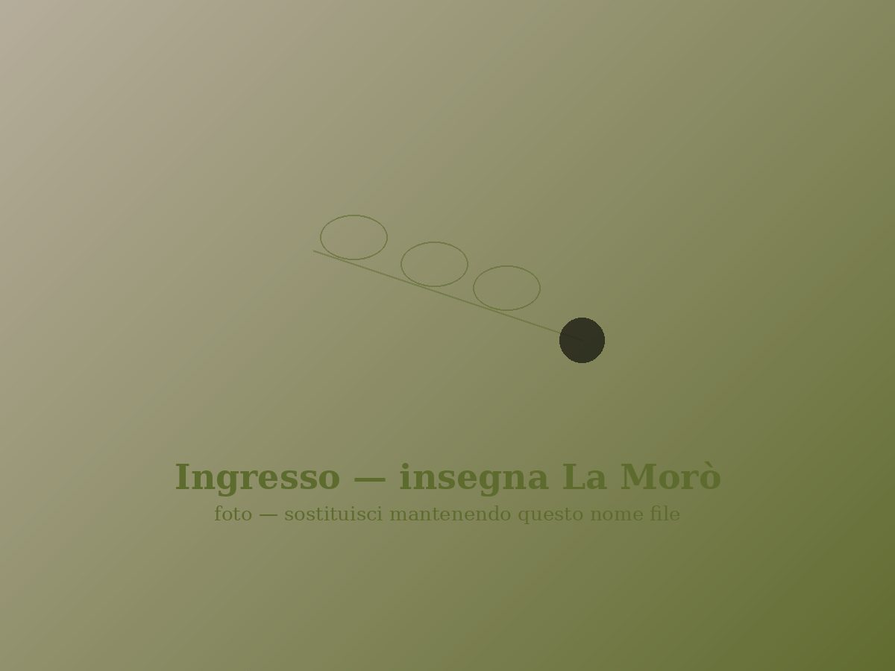
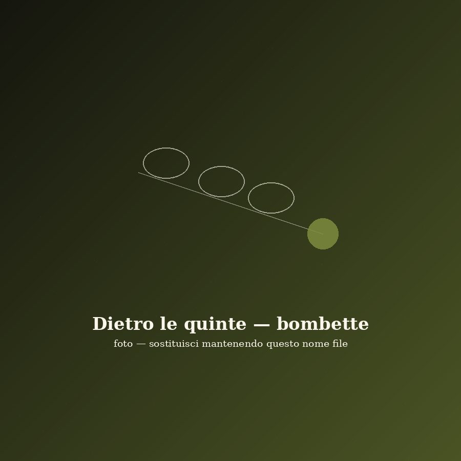
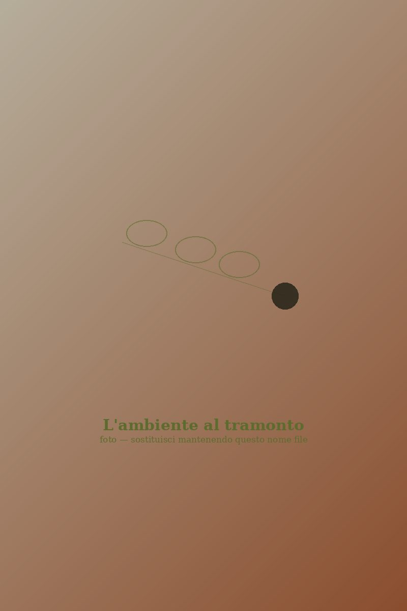

Antipasti
Fritti misti
Pittule, crocchette di patate, polpette di melanzane e panzerotti, dorati al momento.

Frassanito · Otranto · Salento
Cucina salentina genuina, tra gli ulivi di Frassanito

Chi siamo
Da anni l'Agriturismo La Morò custodisce un angolo di campagna salentina immerso nel verde, a due passi da Otranto. Non un semplice ristorante, ma un'azienda agricola che vive di stagioni, raccolti e tradizione: le verdure che portiamo in tavola nascono nei nostri campi, e la cucina segue il ritmo lento della terra.
La nostra filosofia è semplice: genuinità della materia prima, rispetto della tradizione salentina, accoglienza sincera.
Siamo aperti tutte le sere, da giugno a settembre, per la cena, nella nostra sala interna o, nei mesi estivi, all'aperto tra gli ulivi. Prenotazione gradita.
La cucina
Tutti i nostri piatti sono preparati al momento, con ingredienti freschi provenienti — quando possibile — direttamente dalla nostra azienda agricola, o da produttori tipici del territorio.
Pittule, crocchette di patate, polpette di melanzane e panzerotti, dorati al momento.

Cotti alla brace, profumati al rosmarino e serviti con limone del nostro Salento.

Il primo simbolo della Puglia, con le verdure di stagione dei nostri campi.

Pasta fresca e ceci, con laganelle croccanti fritte a completare il piatto.

Marinato con rosmarino e limone, cotto lentamente sulla brace.

Bombette, salsicce e costine: un tripudio di carni alla brace, abbondante e conviviale.

Un intramontabile della nostra tavola, con basilico fresco dell'orto.

Il finale goloso: semifreddo con una cascata di cioccolato caldo.

Dietro le quinte
Ogni bombetta è preparata a mano, farcita con formaggio e aromi prima di finire sulla brace. È il gesto lento e paziente che fa la differenza in tavola.

Punto vendita
Accanto al ristorante, l'Agriturismo La Morò propone un punto vendita di prodotti agricoli coltivati direttamente nella nostra azienda. Verdure di stagione, conserve, prodotti tipici: la stessa genuinità che trovate nei nostri piatti, da portare a casa.
L'ambiente
L'Agriturismo La Morò sorge in località Frassanito, nella campagna di Otranto: un ampio giardino tra ulivi secolari, un'atmosfera semplice, familiare, senza pretese. Una sala accogliente per le serate più fresche e un ampio spazio all'aperto nei mesi estivi. I nostri amici a quattro zampe sono i benvenuti.

Come trovarci